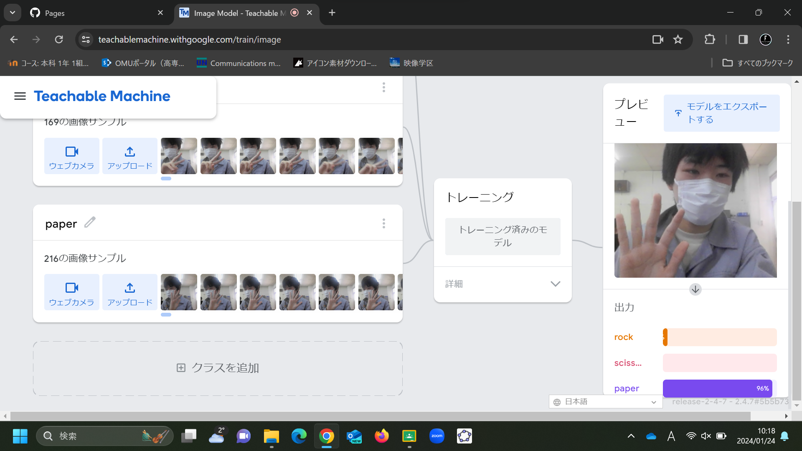
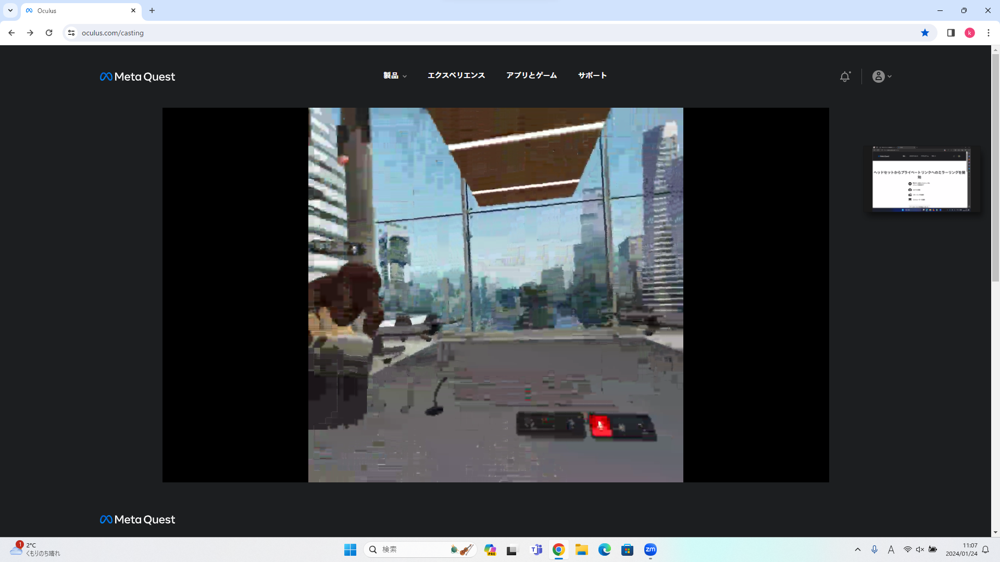

第2週目
2-1 １週目のレポートをHTMLで作る
１週目のレポート
1.内容
サイエンスアート、ゲーム、ホームページについての内容と感想を書きました。
2.感想
改行したり中央揃えにしてきれいに文章を配置できたらなと思いました。文章が変なところで改行されていたりしていて自分でも読みにくかった。
2-2 機械学習体験

1.内容
Teachabele Machine環境で自分の手をグー・チョキ・パーの形にしてそれぞれ撮影し、判別する機械学習モデルを作成して人工知能技術について体験する。
2.感想
時々別のものに判定してしまうことがあり、サンプルを増やせばより精度が上がるのかなと思った。顔が画面からでるとパーと判定されていたので手だけ見せたり遠くから見せたり条件も変える必要がある。
2-3 VR（バーチャルリアリティー：Virtual Reality）会議室の体験

1.内容
Metaquest2を用いてメタバース空間に入りWorkroomsアプリで会議室に入りVR体験を行う。
2.感想
VR体験は初めてで正直操作性やリアルさのようなものはないと思っていたが今回の実習で考えを改めることになった。予想よりも遥かに画質がよくまるで映画を見ている様な没入感があった。
これであればメタバース空間上でも会議やコミュニケーションは可能だろうと感じた。また操作性もそこまで悪くなくコントローラーをペンのように持ってボードに書けるのは驚いた。